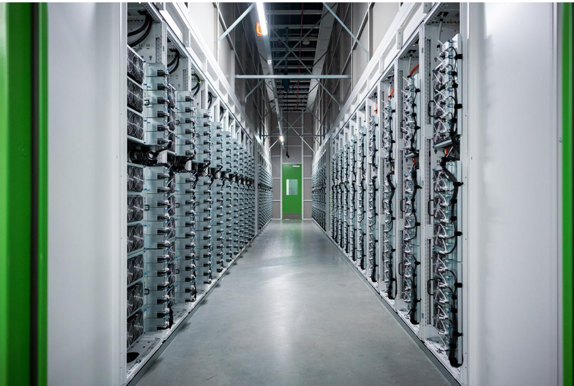

Facilities We Serve

Data centers and telecommunications facilities depend on cooling systems that perform precisely as designed—every hour of every day. TAB Services Company provides specialized testing, adjusting and balancing services for enterprise data centers, colocation facilities, hyperscale campuses, telecommunications infrastructure and on-site server rooms.
Our experienced technicians verify the performance of data center air handlers, chilled-water systems, data center chillers, pumps, heat exchangers, liquid cooling systems and critical air-distribution equipment. By confirming that airflow and water flow are properly distributed throughout the facility, we help owners and operators protect uptime, reduce operational risk and improve energy efficiency.
Accurate system balancing helps ensure that available cooling capacity reaches the equipment and spaces where it is needed most—without wasting energy through excess airflow, overpumping or unnecessary equipment operation.
We have serviced and helped build enterprise and hyperscale data centers for companies in technology’s “Magnificent Seven” as well as major data center developers. We understand the unique infrastructure and sensitivity of these environments.

Precision cooling keeps dense server environments running within design tolerances.
In a data center, cooling performance cannot be evaluated by equipment operation alone. Airflow, water flow, pressure relationships, temperature conditions and control sequences must work together across the entire mechanical system to support dense technology loads and continuous operation.
TAB Services Company independently measures, adjusts and documents HVAC system performance under actual operating conditions. Our team verifies that cooling capacity reaches the areas where it is needed, that air and hydronic systems meet design requirements and that the facility is prepared to support current and future technology loads.
We support traditional air-cooled environments as well as high-density facilities incorporating direct-to-chip cooling, rear-door heat exchangers, coolant distribution units and other liquid cooling technologies. As hyperscalers and colocation providers deploy higher rack densities, the proper balancing of both airside and waterside systems becomes increasingly important to maintaining stable operating conditions.
Even small airflow or water-flow deficiencies can create hot spots, reduce redundancy and place unnecessary stress on critical equipment. Independent testing and balancing provides owners, engineers and commissioning teams with clear, defensible performance data before a facility enters operation or additional technology loads are brought online.

By identifying underperforming equipment, uneven flow distribution and excessive system operation, TAB Services Company can also help facilities reduce fan energy, pumping energy and unnecessary chiller demand. Properly balanced systems allow equipment to operate closer to design conditions, helping improve reliability while supporting lower energy use and operating costs.
Whether supporting a new hyperscale campus, a colocation expansion, a telecommunications facility or an existing enterprise data center, our goal is the same: verify that the cooling infrastructure is operating efficiently, reliably and in accordance with the engineer’s design.
Protect Uptime. Reduce Energy Waste. Verify Performance.
Partner with TAB Services Company to confirm that your mission-critical cooling systems are ready to perform when failure is not an option.